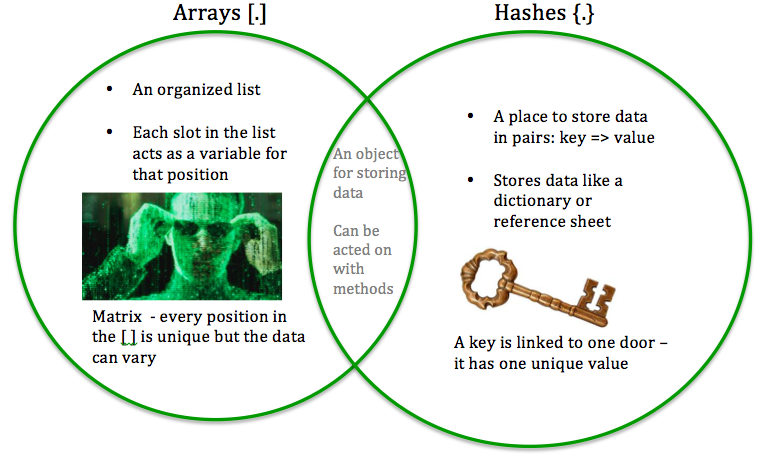
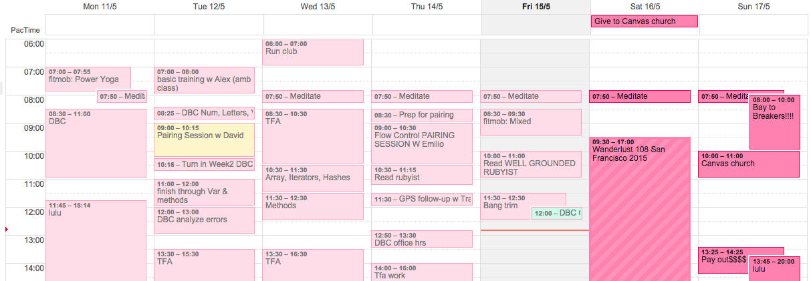
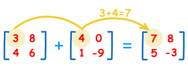

Array vs Hash
14 de mayo 2015
[ ] or { } ?

An array - marked with [ ] is just a way to store your data. You might store your cereal in boxes in the cabinet, maybe you store your bills in a folder in a metal cabinet. How do you keep your makeup organized in the bathroom? Your shoes in your closet? Well, my shoes aren't very well organized. But one thing that makes sense to me when I think about an *organized list* is my calendar.
I store a lot of data in my calendar. Each event fits into a slot during my day. Slot: array >> event: week. So, my week is an array. Can you imagine the size of my month as an array?
How does that look when I want to program all my workouts, study time, work schedule and other events into an array?
Monday = ["yoga", "study DBC", "lululemon", "run club", "eat"]
Tuesday = ["workout", "DBC pairing", "study DBC", "TFA work", "lululemon", "meetup"]
I was trying to think of another way to think about arrays. I was thinking about the things that matter in my family. We fly! My dad is a pilot so we get to soar in the clouds and I love sharing that time with my family. So, this example with arrays comes from thinking about flying.
flight_checklist = ["fuel up", "log flight plan", "check safety gear", "passengers on board", "start engines", "seatbelts on", "check in with tower", "taxi out", "take off", "watch the clouds", "land", "taxi", "park"]
So, how can I look up something in my array?
flight_checklist[3] is saying, "hey, go get the thing stored in the 3rd slot."
FREE JUICE: the initial slot in an array is [0]. So, what is going to be my flight_checklist[3] piece of data?
=> passengers on board.
Sorry, no free juice but now you know that first doesn't always = 1.
When data is stored in an array, you can do things with that data. It doesn't just sit in a locked file cabinet. You can add more data (push), delete data, sort it, CAPITALIZE the variables, and so much more! If your data is values-based, you can also perform mathematical operations. Remember matrix operations from algebra in high school? I do because I taught it...
Matrix math is SO powerful! And this is a real application of a mathematical concept. For all you math teachers out there - this is an amazing connection!
What's a Hash? Why?
A hash is unique because the location of the information is not important. An array finds data based on where it is but not in a hash. You establish the "key" => "value" relationship so all you need to know is the 'key' or the 'value' to look it up.
Let's stick with flying. You know how each airport also has a shorter code to reference the airport? HASH.
airport_codes = {
"Detroit" => "DTW",
"Phoenix" => "PHX",
"San Francisco" => "SFO",
"Denver" => "DIA",
"Santiago" => "SCL",
"Tokyo" => "HND",
}
I was learning airport codes before I knew what mascara was.
So, how do you get info from your hash? Let's say you can't remember the airport code for ....Tokyo, Japan.
airport_codes["Tokyo"]
What will I get?
=> HND
There is SO much to learn with arrays and hashes. I know this is just the beginning. I'm learning to set them up, put information into them, and do some simple actions (aka: methods) with them. What's next!?